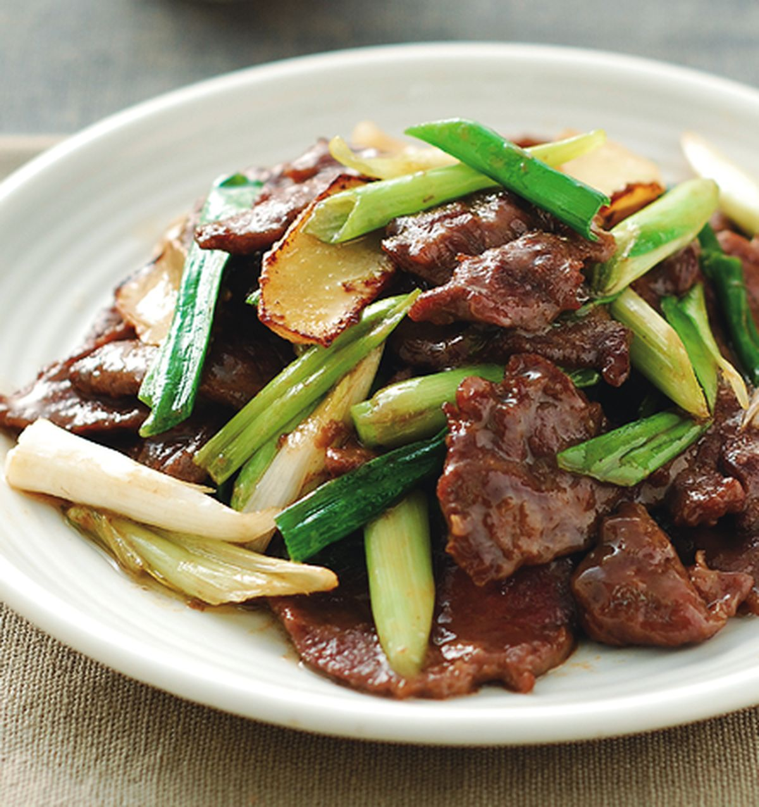

葱爆牛肉
了解如何製作葱爆牛肉！
介紹
所需材料
步驟
返回

介紹
葱爆牛肉是一道傳統的中式菜餚，以牛肉和蔥炒製而成。這道菜色澤棕紅，香氣四溢，肉質鮮嫩多汁，是一道美味可口的料理。葱爆牛肉常見於中國、台灣、香港等地的餐廳和家庭，也是許多人喜愛的中式菜餚之一。
所需材料
材料
數量
牛肉
250克
蔥
2根
姜
1片
大蒜
2瓣
醬油
2湯匙
米酒
1湯匙
糖
1茶匙
鹽
適量
胡椒粉
適量
生粉
1茶匙
食用油
適量
步驟
將牛肉切成薄片，加入醬油、米酒、糖、胡椒粉、生粉和適量的鹽拌勻，醃製約 15 分鐘。
蔥切成段，姜和大蒜切成末備用。
熱鍋倒油，加入蔥段和姜末炒香。
加入醃好的牛肉翻炒至變色。
加入大蒜末繼續炒香。
用醬油調味，繼續翻炒至牛肉熟透，汁液收乾即可。
炒好後，可以根據個人口味加入一些辣椒或胡椒粉提升口味。葱爆牛肉可以搭配白飯或麵食一起食用，是一道營養豐富的主菜。
聯絡作者
s20181025@qos.edu.hk
更多食譜
愛料理網站